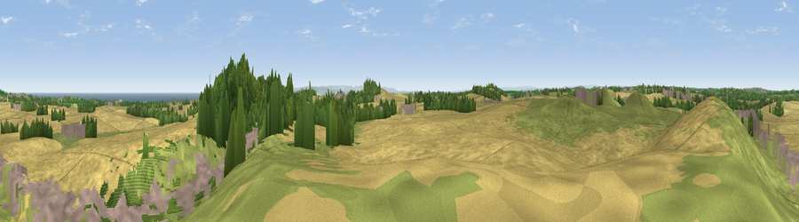

Viewpoint near Castle Eden
#9608 in England · top 27% of its area beats it · near Castle EdenWhere it is
The exact computed spot (NZ 43675 35425). Click the marker for map links.
The view, rendered

A 360° render of this exact spot computed from the terrain model, tree cover and land cover — summer colours, afternoon light, calibrated against photographs of famous viewpoints. Real trees, hedges and buildings will differ in detail.
The panorama
Grey silhouette: terrain skyline in each direction (720 bearings, Earth curvature and refraction included). Dashed green: skyline with trees (+15 m) and buildings (+8 m) as obstacles. Blue strip: how far the ground is visible on each bearing.
Where the view opens
Wedge length = distance to the farthest visible ground on that bearing (vegetation-aware). Rings at 10, 25 and 50 km.
What fills the view
53% cropland · 26% grassland · 10% built-up · 10% woodland · 2% water
Angular shares of the visible panorama (visual magnitude), not map area. Landscape diversity 0.53 (0–1 Shannon).
Key numbers
More beautiful places nearby
The staircase of upgrades: each row has a higher view potential than everything closer. Driving times are estimates from straight-line distance, calibrated against real road routing — check an actual route before setting out.
| Place | Direction | Drive | Score |
|---|---|---|---|
| Viewpoint near Hesleden | ESE · 0 km | ~1 min | 66.5 |
| Viewpoint near Elwick | SSE · 1 km | ~4 min | 70.5 |
| Viewpoint near Easington Colliery | N · 10 km | ~19 min | 74.4 |
| Viewpoint near Houghton-le-Spring | NNW · 16 km | ~29 min | 76.0 |
| Viewpoint near Lazenby | SE · 22 km | ~36 min | 86.4 |
| Warsett Hill | ESE · 29 km | ~46 min | 86.8 |
| Viewpoint near Easington | ESE · 34 km | ~52 min | 90.2 |
| The Knoll | SSW · 456 km | ~425 min | 91.0 |
54.71195, -1.32363 · source: screening · position refined by local search. Computed location — check access rights before visiting.